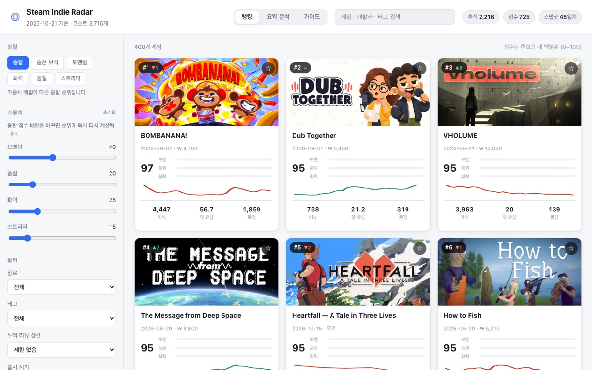
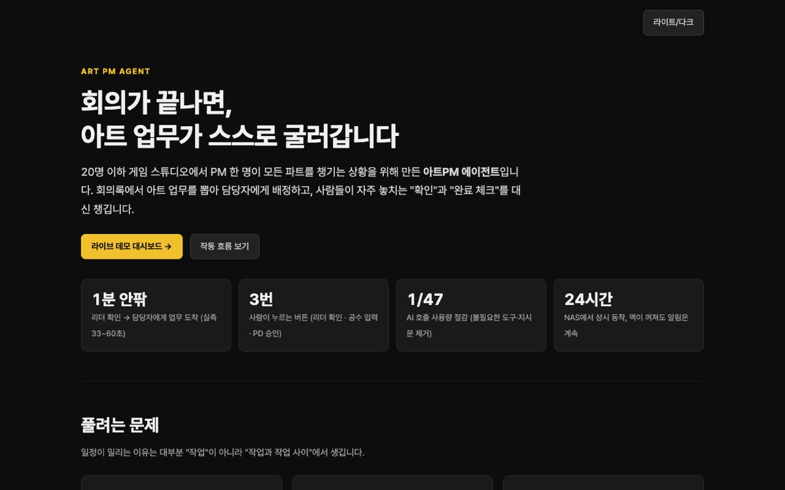

1. 스팀 인디 레이더
steam-indie-radar · 매일 자동 수집 중
1,180개수집한 신작
276개점수 산출
0회LLM 호출
아직 안 터졌지만 지금 오르는 중인 인디게임을 매일 찾아냅니다.
모멘텀·품질·화력·스트리머 적합도·숨은보석 5개 축을 따로 점수화합니다.
실제 구동 중인 대시보드 →
내가 넣은 노하우
- 경험22년간 사업 PM으로 경쟁작 유료화와 시장을 분석해 왔습니다.
- 판단Steam 인기 순위는 후행 지표입니다. 거기 올라온 시점엔 이미 늦습니다.
- 설계흥행의 선행 신호를 5개 축으로 분리하고, 이미 알려진 정도는 오히려 감점으로 넣었습니다. 단순 인기순은 Steam이 이미 보여주기 때문입니다.

2. 아트 PM 자동화 툴
art-pm-tool · NAS 24시간 운영 중
73개공정 체크리스트
28개자동 테스트 통과
24시간상시 가동
배정 → 확인 → 작업물 감지 → PD 승인 → 다음 공정 연결까지,
PM이 따라다니며 챙기던 일을 Slack · Kitsu · git 을 잇는 봇이 대신합니다.
라이브 데모 보기 →
내가 넣은 노하우
- 경험20명 이하 스튜디오에서 PM 1인이 전 파트와 사업관리를 겸임해 봤습니다.
- 판단병목은 세 가지입니다. 요청을 안 봐서 자기 일인지 모르고, 완료 체크를 안 해서 다음 공정이 멈추고, 결국 PM이 따라다니게 됩니다.
- 설계공정 연결의 판단 기준을 Slack 버튼이 아니라 Kitsu의 상태 변화에 뒀습니다. 사람이 버튼을 누를 거라 기대하면 자동화는 깨집니다. 재알림도 근무시간 기준으로 계산해 주말을 건너뜁니다.
플레이 영상 보기 →
3. 요괴 포커
yokai-poker · 모바일 게임 · 개발 중
41개자동 테스트 통과
8종민화 아트
15종효과음
포커 족보로 싸우는 던전 크롤러입니다. 존 클리어·장비·상점·공포 게이지까지
구현하고, 존 1을 완성품 수준의 한 조각으로 만들고 있습니다.
내가 넣은 노하우
- 경험스마트폰 게임 초창기, 게임성은 훌륭했지만 BM과 리텐션 설계가 잘못되어 사장된 게임이 있었습니다. 그 내용을 벤치마킹해 개선한 뒤 새롭게 출시할 예정입니다.
- 판단기본 룰은 그대로 가져가되 캐릭터 컨셉과 세계관은 별도로 세웁니다. 아트는 도트로 구현해, AI로 만들었을 때 눈높이 차이가 크게 나지 않도록 했습니다.
- 설계모바일 게임용으로 우선 준비 중입니다. 1판과 1스테이지의 플레이 사이클에서 핵심 재미를 먼저 설계하고, 거기서 확장시키는 방향으로 잡았습니다.